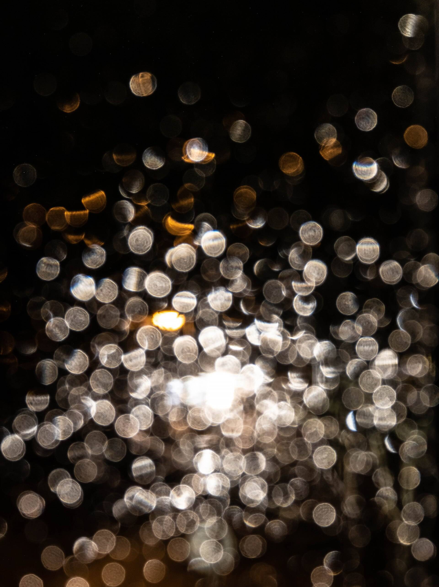

Rain, wind,
a distant train.
Lull layers all three, then fades them out once you fall asleep.

Light sleepers hear a sound that runs all night. Lull stops once you are asleep.
Rain, wind and distant trains while you drift off, then nothing until morning.
Three sounds, one mix.
Each has its own level, so rain can lead and the train stays far off.
Rain
Leads the mix, steady on the glass.
60Wind
Sits under the rain.
35Distant trains
Kept low, far off behind the rest.
15
The train stays far off.
Low in the mix, for ears that notice everything.

Then it fades out.
Once you fall asleep, all three drop away together.
While you drift off
Once you are asleep
One price, every night.
All three sounds and the fade, for three pounds a month.